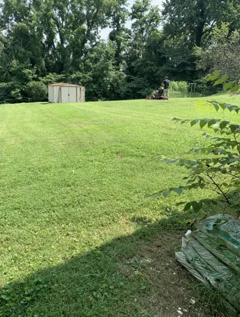

Start with the site
Lawn care in Southwest Virginia is not one-size-fits-all.
A strong lawn depends on more than mowing. Elevation, slope, soil compaction, drainage, sun exposure, grass variety, and seasonal rainfall all affect how turf grows. A yard in Wise County may dry and cool differently from a property in Abingdon or Kingsport. Good lawn maintenance begins by noticing those conditions and adjusting the plan.
Most residential lawns in this region contain cool-season grasses such as tall fescue, Kentucky bluegrass, or a blend. These grasses generally perform best when they receive consistent moisture and are encouraged to grow during spring and fall. Summer heat can slow growth and stress turf, especially on steep, exposed, or poorly drained sites.
Look for thin turf, standing water, bare soil, thatch, and compacted paths.
Schedule treatments around grass growth, soil conditions, and local weather.
A consistent maintenance routine outperforms occasional rescue work.
The weekly routine
Mowing, trimming, and edging for resilient turf
Proper mowing is one of the most visible parts of lawn maintenance, but it is also one of the easiest places to create stress. For most cool-season lawns, keep the blade high enough to shade the soil and protect the crown. A common target is roughly 3 to 4 inches, adjusted for the grass variety and site conditions.
Four mowing habits that make a difference
- 01
Follow the one-third rule. Remove no more than one-third of the blade height in a single mowing. Cutting too much at once can expose soil and weaken the plant.
- 02
Keep blades sharp. A dull mower tears grass instead of making a clean cut, leaving ragged tips that turn brown and invite disease.
- 03
Change direction. Alternating mowing patterns reduces ruts and prevents the grass from leaning in one direction.
- 04
Finish the edges. String trimming and bed edging keep turf from creeping into planting areas and give the entire property a cleaner line.

Feed the soil, not just the grass
Fertilization and weed control should be based on conditions.
A lawn fertilizer program should reflect the grass type, soil fertility, mowing habits, drainage, and time of year. Applying more product is not a shortcut to a healthier lawn. Excess nutrients can stress turf, encourage uneven growth, and wash into drainage systems.
A soil test is the best starting point when a lawn repeatedly looks pale, thin, or uneven. It can reveal whether the soil needs nutrients or whether the real problem is compaction, poor drainage, shade, or incorrect mowing. For lawn care in Wise VA, Norton VA, and surrounding areas, the slope and soil profile are especially important parts of the diagnosis.
Prevention
Dense, properly mowed turf leaves less room for weeds. Correct pH, balanced nutrients, and good watering habits support that density.
Targeted control
Identify the weed before choosing a treatment. Product timing and label directions matter for both results and the health of surrounding plants.
Important: Keep children and pets off treated areas for the time stated on the product label, and avoid applying lawn products before heavy rain or when runoff is likely.
Repair thin and compacted areas
Core aeration and overseeding help lawns fill in.
Foot traffic, mowing patterns, construction, clay-heavy soil, and heavy rain can compact the ground. Compacted soil limits air, water, and root movement. Core aeration removes small plugs from the lawn so moisture and oxygen can reach the root zone.
For cool-season turf, late summer into early fall is typically the strongest window for aeration and overseeding in Southwest Virginia and Northeast Tennessee. Warm soil encourages germination while cooler air reduces heat stress on new seedlings. Seed-to-soil contact is essential, so simply scattering seed over thatch or hard ground usually produces disappointing results.
- ✓ Mow slightly shorter before the work, without scalping the lawn.
- ✓ Aerate areas that receive traffic or drain slowly.
- ✓ Use a seed blend suited to sun, shade, and regional conditions.
- ✓ Keep the seedbed evenly moist until seedlings are established.
A year of lawn maintenance
Seasonal lawn care calendar
Weather varies each year, so use the calendar as a guide rather than a rigid schedule. Soil temperature, rainfall, and grass growth should determine the exact timing.
Inspect winter damage, remove leaves and debris, tune up equipment, and begin mowing as growth resumes. Avoid working wet soil, which can create more compaction.
Maintain a consistent mowing height, monitor weeds, check drainage, and watch for thin areas. Mulch beds and crisp edging help the lawn and landscape read as one maintained property.
Raise mowing height during heat, water deeply and less frequently when needed, and limit stress from traffic. Do not force growth with unnecessary fertilizer during drought or extreme heat.
Schedule core aeration and overseeding, remove leaves before they mat down, and address drainage or bare soil before winter. Fall is often the most productive season for cool-season lawn improvement.
Reduce traffic on frozen or saturated turf, clear storm debris when safe, and plan spring improvements. Dormant grass still benefits from being protected from repeated wear.
Know when to call
A dependable lawn service protects your time and your property.
DIY lawn care can be rewarding, but recurring lawn maintenance takes time and consistent equipment. Professional lawn care is useful when mowing, trimming, fertilization, seasonal cleanup, weed control, aeration, or property size makes the routine difficult to keep up with.
McGuire's Lawn & Landscaping provides lawn mowing and grounds care for residential and commercial properties across Southwest Virginia and Northeast Tennessee. We can help create a maintenance plan around the property, communicate clearly about the scope, and keep the work consistent through the growing season.
Looking for lawn care near Wise, Norton, Abingdon, Kingsport, or Bristol?
Tell us what your property needs, from weekly lawn mowing to seasonal cleanup and landscape maintenance.
Request a free lawn care quoteCommon questions
Lawn care FAQs
How often should a lawn be mowed in Southwest Virginia?
Most actively growing lawns need mowing about once a week, although rainfall, grass type, shade, and growth rate can change the schedule. Never remove more than one-third of the grass blade at one time.
When is the best time to aerate and overseed?
Late summer through early fall is usually the best window for cool-season turf in this region. Soil temperatures and moisture typically support root development while cooler air reduces stress on new seedlings.
Do I need professional lawn care?
Professional lawn maintenance can help when a property needs consistent mowing, seasonal timing, edging, fertilization, weed control, cleanup, or equipment and labor that a homeowner does not have available.